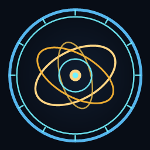

Organiza em ./arquivos/<Categoria>/ e libera consultas de extratos, saldos e recibos na Katharos Nous | katharos AI.
Inicialização com o Windows, motor de IA offline, Obsidian Vault e integrações de envio.
./codigo/mpe.config.jsonReferência direta de uso, cálculo de memória RAM, velocidade e hardware recomendado.
Barra de Tarefas: fixe pelo atalho Katharos Nous - katharos AI ou diretamente pela janela aberta por Katharos.exe.